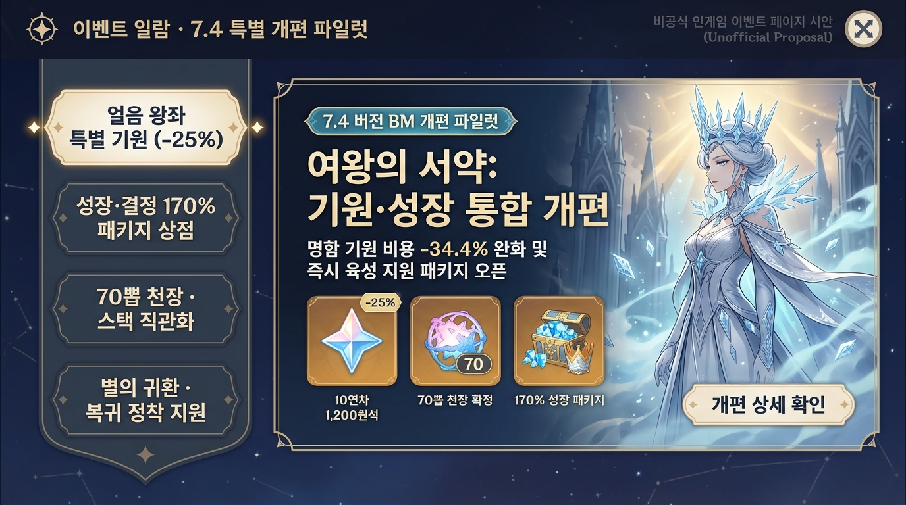
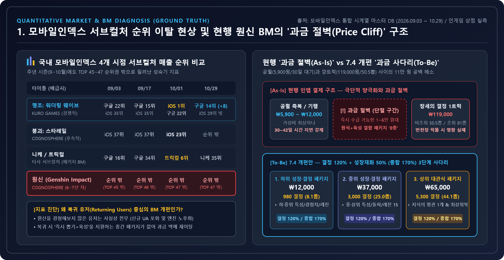
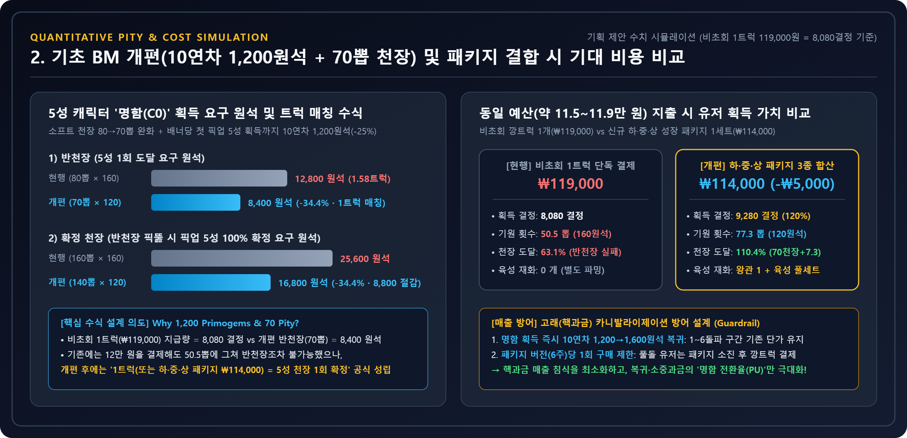
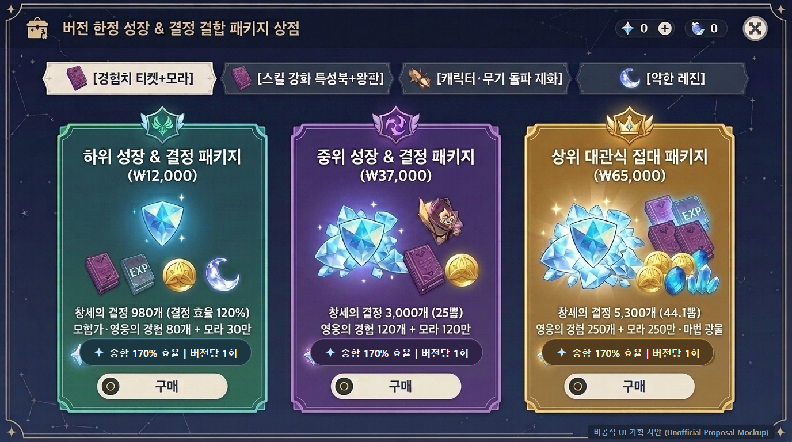
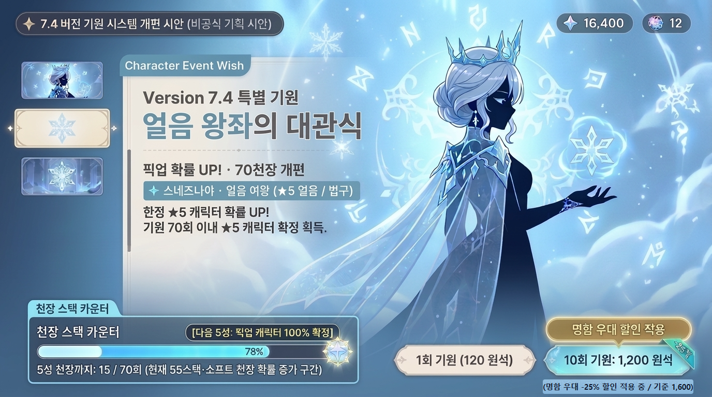

ACTION 01 · 얼음 왕좌 특별 기원 (-25%)
01. 기원 개편안 보기 →
명함 기원 허들 -34.4% 인하
소프트 천장을 80→70뽑으로 상시 완화하고 배너당 첫 픽업 5성(명함)까지 10연차 1,200원석을 적용해 비초회 1트럭 = 5성 천장 1회 확정을 성립시킵니다.
"보수적 트럭+공월 구조의 과금 절벽을 어떻게 해소할 것인가 — 인게임 이벤트 페이지 시안을 출발점으로, 70뽑 천장 상시화·명함 1,200원석 우대·종합 170% 성장 패키지·천장 UI 개편을 설계합니다."

소프트 천장을 80→70뽑으로 상시 완화하고 배너당 첫 픽업 5성(명함)까지 10연차 1,200원석을 적용해 비초회 1트럭 = 5성 천장 1회 확정을 성립시킵니다.
경험치·특성(왕관)·돌파·약한 레진과 120% 창세의 결정을 결합한 3단계 패키지(₩12,000~₩65,000)로 뽑기 직후 육성 병목을 해소합니다.
불쾌한 돌발 과금 팝업을 배제하고 기원 화면에 실시간 천장 카운터(N/70회)를 탑재하며, 명함 직후 1,600원석 복귀로 고래 매출을 지킵니다.
진단 요약: 주년 시즌이 포함된 2026년 9~10월 모바일인덱스 4개 스냅샷 전 구간에서 『원신』이 양대 마켓 TOP 45~47 밖으로 이탈한 반면, 경쟁작 『명조』는 iOS 1위·구글 14위를 기록했습니다. 신규 유입이 포화된 7년 차에는 '복귀 유저 안착'을 위한 BM 사다리 구축이 유일한 돌파구입니다.
출처 및 기준: 2026-09-03, 09-17, 10-01, 10-29 모바일인덱스 실시간 순위 4개 스냅샷 교차 대조 결과이며, Google Play와 App Store 순위를 분리 기재합니다.
| 타이틀명 | 공식 배급사 | 2026-09-03 (구글 / iOS) | 2026-09-17 (구글 / iOS) | 2026-10-01 (구글 / iOS) | 2026-10-29 (구글 / iOS) | 시장 국면 해석 |
|---|---|---|---|---|---|---|
| 명조: 워더링 웨이브 | KURO GAMES (HK KURO GAMES LIMITED) | 22위 / 35위 | 15위 / 35위 | 22위 / 1위 (NEW) | 14위 (+8) / 29위 밖 | 오픈월드 직접 경쟁작. 픽업 버스트 시 iOS 정상 및 구글 중상위 수성 |
| 붕괴: 스타레일 | COGNOSPHERE PTE. LTD. | 45위 밖 / 37위 | 46위 밖 / 37위 | 47위 밖 / 23위 (+14) | 47위 밖 / 47위 밖 | 자사 후속작. 대형 업데이트 주기에 맞춰 iOS 중상위권 진입 확인 |
| 젠레스 존 제로 | COGNOSPHERE PTE. LTD. | 45위 밖 / 45위 밖 | 46위 밖 / 46위 밖 | 47위 밖 / 39위 | 47위 밖 / 47위 밖 | 자사 후속작. 픽업 업데이트 시점 iOS TOP 40 내 차트인 |
| 승리의 여신: 니케 / 트릭컬 | Level Infinite / EPIDGames | 니케 16위 / 20위권 | 니케 34위 / 30위권 | 트릭컬 6위 · 니케 15위 | 니케 35위 / 35위 밖 | 다층 패키지·이벤트 연동 BM 기반의 순위 방어 및 역주행 |
| 원신 (Genshin Impact) | COGNOSPHERE PTE. LTD. | 순위권 밖 (TOP 45 밖) | 순위권 밖 (TOP 46 밖) | 순위권 밖 (TOP 47 밖) | 순위권 밖 (TOP 47 밖) | 주년 시즌이 낀 9~10월 4개 스냅샷 전 구간 양대 마켓 순위권 밖 |

| 현행 상품 구분 | 결제 금액 | 지급 재화 (원석·결정) | 기원 횟수 (160원석 기준) | 1뽑당 실질 단가 | 수급 시간 | 복귀·소중과금 유저 관점 병목 |
|---|---|---|---|---|---|---|
| 공월 축복 (월정액) | ₩5,900 | 300 결정 + 2,700 원석 | 18.75 뽑 | ₩315 / 뽑 | 30일 출석 | 가성비는 최고이나 복귀 당일 즉시 뽑기 불가 |
| 진주 기행 (배틀패스) | ₩12,000 | 4 인연 + 680 원석 (1,320 상당) | 8.25 뽑 | ₩1,455 / 뽑 | 약 42일 (Lv.50) | 버전 중반 이후 복귀 시 만렙 도달 및 보상 회수 어려움 |
| 중간 패키지 구간 | ₩12,000 ~ ₩65,000 | 원석+육성 결합 상품 0종 | 0 뽑 | - | - | 공월·기행과 12만 원 트럭 사이를 잇는 즉시 과금 사다리 전무 |
| 1트럭 (초회 2배) | ₩119,000 | 6,480 + 6,480 = 12,960 결정 | 81.0 뽑 | ₩1,469 / 뽑 | 즉시 | 연 1회 초기화. 12만 원을 결제해도 반천장 1회분으로 픽뚫 시 명함 실패 |
| 1트럭 (비초회 상시) | ₩119,000 | 6,480 + 1,600 = 8,080 결정 | 50.5 뽑 | ₩2,356 / 뽑 | 즉시 | 반천장(80뽑)의 63.1%에 불과해 소·중과금 유저의 결제 이탈 유발 |
기존 74~80회(하드 90회) 구간을 60~70회(하드 80회)로 상시 영구 단축하여 전 구간 뽑기 피로도를 낮춥니다.
7.4 얼음 여왕 출시 기점, 배너당 첫 픽업 5성(명함) 획득 시까지 1회 120원석(10연차 1,200원석 / 인연 8개 소모)을 적용합니다.
반천장 픽뚫 시에도 확정 천장(140뽑)까지 할인이 유지되며, 명함 획득 직후 돌파 구간은 1,600원석으로 복귀해 고래 매출을 방어합니다.

| 비교 지표 | 현행 (As-Is: 80천장 · 160원석) | 개편 명함 구간 (To-Be: 70천장 · 120원석) | 변화폭 및 체감 가치 |
|---|---|---|---|
| 반천장 (5성 1회 도달) | 80뽑 = 12,800 원석 | 70뽑 = 8,400 원석 | -34.4% (4,400 원석 절감) |
| 확정 천장 (픽뚫 후 픽업 확정) | 160뽑 = 25,600 원석 | 140뽑 = 16,800 원석 | -34.4% (8,800 원석 절감) |
| 비초회 1트럭(₩119,000 = 8,080결정) | 50.5뽑 (반천장 도달률 63.1%) | 67.3뽑 (반천장 도달률 96.2%) | 일일 임무 2~3회만으로 비초회 1트럭 = 5성 천장 1회 확정 |
| 초회 1트럭(₩119,000 = 12,960결정) | 81.0뽑 (반천장 1회 + 1뽑) | 108.0뽑 (반천장 70뽑 + 38뽑 잔여) | 초회 1트럭 + 중위 패키지(3,000결정)면 확정천장 140뽑 보장 |

각 패키지는 버전(6주)당 카테고리·등급별 1회 구매 제한으로 운영합니다. 유저가 모든 패키지를 강제 구매하는 대신 경험치 / 스킬(왕관) / 돌파재화 / 약한 레진 중 현재 계정에서 부족한 병목 항목만 선택 구매하도록 설계하여, 과금 저항을 낮추고 고래 유저의 깡트럭 매출 침식을 통제합니다.
| 패키지 등급 | 판매 가격 | 동일 금액 트럭 결정량 | 지급 결정 (순수 효율 120%) | 명함 할인(120원석) 환산 | 인게임 재화 결합 (+50%) | 종합 효율 | 구매 제한 |
|---|---|---|---|---|---|---|---|
| 1. 하위 성장·결정 패키지 | ₩12,000 | 750 결정 | 980 결정 | 8.1 뽑 | 하·중위 육성 재화 / 약한 레진 5개 | 170% | 버전(6주)당 카테고리별 1회 |
| 2. 중위 성장·결정 패키지 | ₩37,000 | 2,240 결정 | 3,000 결정 | 25.0 뽑 | 중·상위 특성/돌파/레진 15개 | 170% | 버전(6주)당 카테고리별 1회 |
| 3. 상위 대관식 접대 패키지 | ₩65,000 | 3,880 결정 | 5,300 결정 | 44.1 뽑 | 지식의 왕관 1개 · 최상위 세트 | 170% | 버전(6주)당 카테고리별 1회 |
| 합산 (1개 카테고리 하·중·상) | ₩114,000 | *(비초회 1트럭 ₩119,000 = 8,080)* | 9,280 결정 | 77.3 뽑 (70천장+7.3) | 캐릭터 1명 종결 육성 풀세트 | 170% | - |
| 카테고리 탭 | 인게임 병목 해소 지점 | 하위 패키지 (₩12,000 · 980결정+) | 중위 패키지 (₩37,000 · 3,000결정+) | 상위 대관식 패키지 (₩65,000 · 5,300결정+) |
|---|---|---|---|---|
| A. [경험치 티켓 + 모라] | 캐릭터 획득 직후 Lv.1 → Lv.90 레벨업 재화 부족 | 모험가의 경험 50 + 영웅의 경험 30 + 모라 30만 | 영웅의 경험 120 + 모라 120만 + 정제용 마법 광물 100 | 영웅의 경험 250(Lv.90 즉시 달성량) + 모라 250만 + 마법 광물 250 |
| B. [스킬 강화 특성북 + 왕관] | 요일별 비경 제한 및 이벤트 한정 지식의 왕관 수급 병목 | 특성 '가르침'(2성) 27 + '인도'(3성) 18 + 모라 20만 | 특성 '인도'(3성) 36 + '철학'(4성) 24 + 모라 80만 | 지식의 왕관 1개 + '철학'(4성) 50 + 주간 보스 재료 상자 6 + 모라 150만 |
| C. [캐릭터·무기 돌파 재화] | 복귀 유저의 미개방 지역 보스 및 특산물 파밍 장벽 | 원소 보석 가루/조각 상자 18 + 몬스터 부산물 상자 30 | 원소 보석 덩이 상자 18 + 필드 보스 재료 상자 20 + 특산물 60 | 원소 보석 완전체 6 + 필드 보스 재료 26(Lv.90 완결) + 무기 최상위 소재 12 |
| D. [약한 레진 (비경 주회)] | 신규 접대 성유물 세팅 및 다목적 파밍 가속 | 약한 레진 5개 (300 레진) + 수정 코어 10개 | 약한 레진 15개 (900 레진) + 수정 코어 30개 | 약한 레진 25개 (1,500 레진) + 축성의 서리 1개 |
원석 부족 시 조건부 결제 팝업을 띄워 패키지를 강매하는 방식은 원신 브랜드 가치를 훼손합니다. 기원(가챠) 메인 화면 자체에 실시간 천장 카운터와 명함 할인 상태만 투명하게 기본 제공하고, 유저 스스로 부족한 스택을 확인해 상점 패키지를 선택하도록 설계했습니다.

1) 좌측 하단 천장 스택 카운터: 0~59스택 구간은 5성 천장까지: NN / 70회 (현재 MM스택)을, 60~69스택 구간은 소프트 천장 확률 증가 구간 진입 상태를 실시간 게이지로 표시하며, 직전 5성 결과에 따라 [반천장 50%] 또는 [다음 5성: 픽업 100% 확정] 뱃지를 표기합니다.
2) 우측 하단 명함 할인 인디케이터: 첫 픽업 5성 획득 전까지 [명함 우대 할인 -25%] 1회 120 / 10회 1,200 원석을 노출하고, 명함 획득 즉시 160 / 1,600 원석으로 자동 복귀합니다.
현재 기원 스택과 패키지 조합에 따른 As-Is vs To-Be 천장 도달률을 직접 계산해 볼 수 있습니다.
| 유저 세그먼트 | 현행 (As-Is) 병목 및 지출 | 7.4 개편안 (To-Be) 적용 시 행동 변화 | 사업적 매출 영향 (PU · LTV) |
|---|---|---|---|
| 복귀 유저(별의 귀환) 및 소과금 | 반천장(12,800원석) 벽과 비초회 트럭 저효율 때문에 결제를 포기하고 재이탈 | 실시간 천장 게이지로 잔여 스택을 확인 후 부족분에 맞춰 하위(₩12,000)·중위(₩37,000) 성장 패키지 결제 전환 | ₩0(미결제 이탈) → ₩12,000~₩49,000 신규 결제 전환(PU 상승) |
| 중과금 유저 (명함~전무 목표) | 초회 소진 후 매 버전 깡트럭(₩119,000) 결제 피로 및 뽑기 후 육성 현타 발생 | 버전당 ₩114,000(하·중·상 3종) 결제로 77.3뽑(70천장 확정) + 왕관·육성 풀세트 확보 | 버전당 약 10~15만 원 구간의 안정적 고정 리텐션 캐시카우 형성 |
| 고래 유저 (6돌파·풀재 목표) | 5성 픽업 7회(풀돌) 확보를 위해 수십 개의 비초회 깡트럭 반복 결제 | 명함(첫 1회) 직후 1,600원석으로 복귀하며, 패키지는 버전당 1회 제한이 걸려 1~6돌파는 기존과 동일하게 깡트럭 결제 | 고래 깡트럭 매출 침식(Cannibalization)을 최소화하면서 70천장 완화로 풀돌 만족도 개선 |
별의 귀환 활성화 계정 중 복귀 14일 이내 하위(₩12,000)·중위(₩37,000) 패키지 결제 전환율과 30일 잔존율(D30 Retention) 변화를 추적합니다.
반천장 직전 스택에서 중도 이탈하던 유저가 실시간 천장 카운터 UI와 중간 패키지를 통해 70회 천장까지 도달해 첫 5성을 획득하는 완주율을 검증합니다.
경험치 / 특성·왕관 / 돌파재화 / 약한 레진 4개 탭 중 실제 구매 집중도가 높은 재화를 식별해 차기 버전 인게임 파밍 밸런싱 근거로 활용합니다.
1~6돌파 고래 세그먼트의 명함 할인분(최대 140뽑 차액) 감소 대비, 복귀·소중과금 세그먼트의 패키지 순증 매출(Net Revenue Lift)이 상회하는지 검증합니다.
본 기획서의 모바일인덱스 4개 시점 순위 데이터는 모바일인덱스_통합_시계열_순위_마스터_DB.md(2026-09-03~10-29)의 실측 기록이며, 작성자 플레이 데이터(모험 등급 59, 월드 레벨 9, 나타 이하 수집도 85~100%)와 현행 상점 단가(₩119,000 = 8,080결정 등)는 실제 확인 사실에 기반합니다. 7.4 버전 개편 수치(70천장, 1,200원석, 120%/170% 패키지)와 UI 시안·시뮬레이터는 라이브 파일럿 도입을 가정한 비공식 기획 제안값입니다.